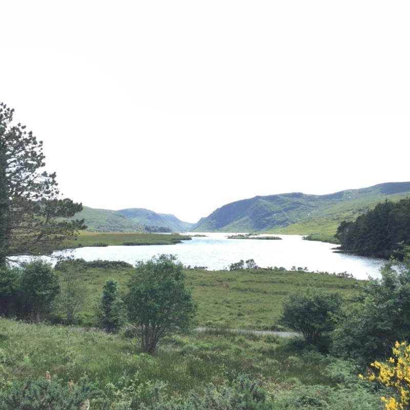
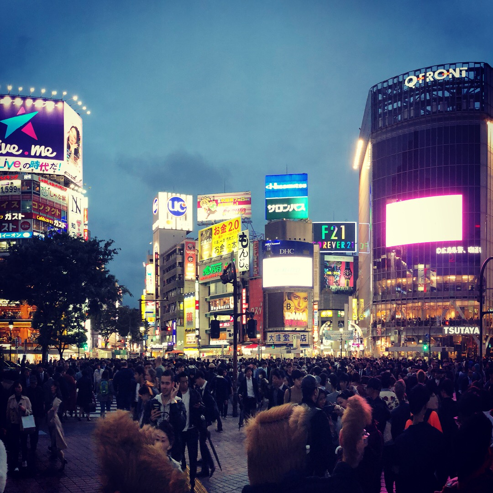
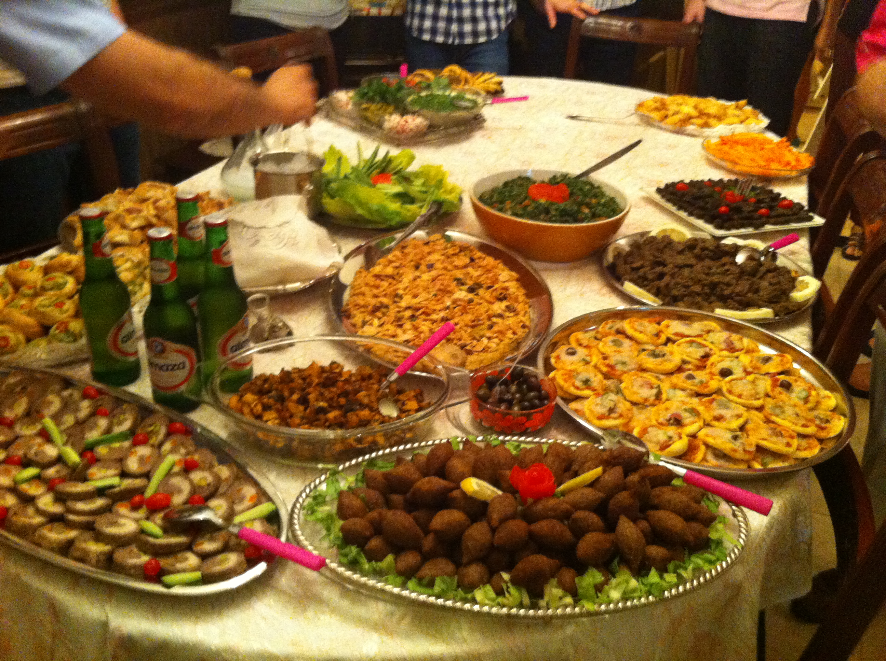
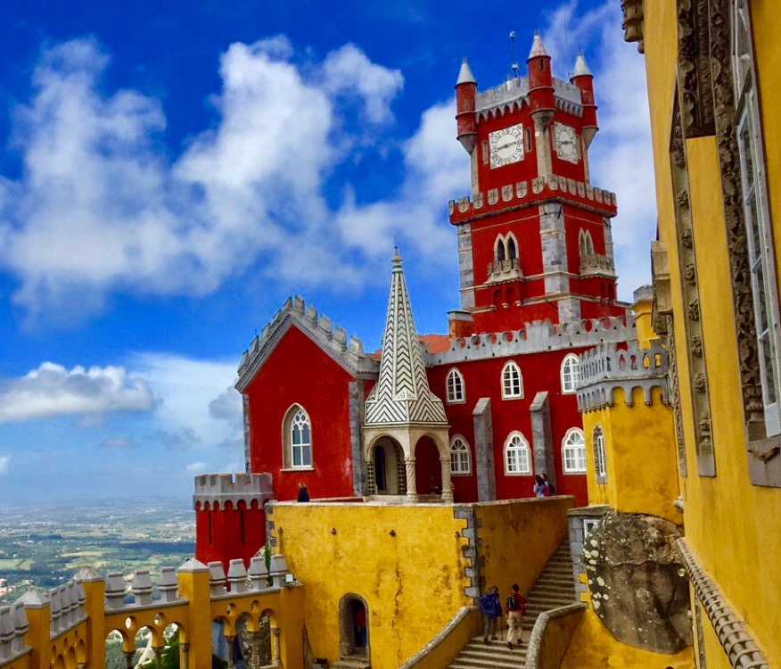

My name is Ryan Juraidini
I am studying computer engineering at Florida Atlantic University in Boca Raton, Florida. I have been doing so for 3 years. I work at a library tech company called Image Access. I have lived in Texas for 6 years, then before that lived in Boca Raton for 13 years and spent 6 months in my birth country of Germany.
This website is a first hand recollection of the countries I have travelled to in my life. I have a passion for learning about other countries and their geography. This might be due to my background explained in "Why Do I Travel?", but when I travel to other countries I really take in the culture and differences they hold compared to the one I grew up in.
*Note: there are a handful of countries I have connected flights through but I never left the airport which to me means I never truly visited them, so I will not include those countries.I also have been to many countries as a child/infant but I will only cover places that I genuinely remember about.
Why Do I Travel?
I travel due to my parents both being immigrants from two countries that are overseas from here in the United States. My mother is from the Ireland; I have been traveling there since I was born practically. I was baptized and almost raised there for my early years of life. When I refer to Ireland I am talking about mainly Northern Ireland, which is a separate country part of the United Kingdom. The country people think about when they hear “Ireland” is the Republic of Ireland, which bares the famous green, white, and orange tri-color flag. This is the country of which I hold a passport for and full citizenship for, which allows me to roam freely around most of the European Union due to the Republic of Ireland’s membership in such. Whenever my family and I visit my family in Ireland we make vacations out of it by going to other countries in the other surrounding countries next to Ireland. I have been to many of many times for weeks at a time, so this nearby vacation travel tactics has happened quite frequently. This can be said the same about the lesser handful of times I’ve visited my father’s country of Lebanon. Though there much less often than Ireland, I have been there more of recent due to family weddings that have taken place.
Countries Table:
| Time Zone | Currency | Laungauge | Side of The Road They Drive On | |
|---|---|---|---|---|
| Ireland | GMT (UTC) | Euro | English | Left |
| Japan | JST (UTC+9) | Japanese Yen | Japanese | Left |
| Lebanon | EET (UTC+2) | Lebanese Pound | Lebanese,Arabic | Right |
| Italy | CET (UTC+1) | Euro | Italian | Left |
| Portugal | WET (UTC) | Euro | Portuguese | Right |
Ireland
Year(s) travled to: Most years of my life (years talked about will be 2006, 2010, 2013, 2015)Summary:
Ireland is in Northwest Europe. It took me on average 9 hours to get there. I have been in the winter and summer. In the winter it can get cold but not usually as cold as the Scandinavian countries that are also that far north. This is due to the jet stream that sends a stream of hot air from the Atlantic Ocean. Ireland is very green, which is due to the large amount of rain that occurs on the island. It is a relatively hilly country with few large mountain peaks. The coats offer great views and large cliffs at certain sections like the famous Cliffs of Moher. Sunny days are beautiful, and contrast well with the rolling green hills. In the summer these sunny days make it very hot with little to no air conditioning in homes due to it never usually getting hot. Ireland’s people are: very kind, they love Americans, and love to have a great time. They are mostly cheerful and for the most part in Ireland can be very helpful if you are traveling around the countryside. Most people in Ireland are ethnically Irish. The other majorities are English and Scottish people. The food in Ireland is not really one of the brightest parts about Ireland. You can find good food, but traditional foods lack. The best part would be their amazing steaks and dairy products do to their great land for agriculture. Ireland offers many great castles to go see, and great scenery to view with amazing people to add to the experience of visiting Ireland along the way! The following pictures were taken during my multiple visits:
Click here for the link to the official travel website for Ireland (It covers both Northern Ireland and the Republic of Ireland)
Japan
Summary:
Japan is a country in East Asian where they enjoy a temperate climate. The weather when I went was very cool during the summer. It does snow according to what I heard while I was there. The country has some large hills and some decent sized mountains. One such mountain is Mt.Fuji, which is huge attraction of the country due to the mountain’s beauty and size with no adjacent mountains. The people of are so kind and helpful. They are known for they’re over use of materials in order to keep a status quo of perfection. They would do everything so respectfully, even handing back a credit with both hands on it. The country was so clean, no garbage on the streets or anywhere. The Japanese people are almost all ethnically Japanese, making for huge respect for their country. They are many interesting things to see, anywhere from the small differences that make this country so unique for western travellers. They have so many shrines and areas of old Japanese architecture. There are many vending machine and arcades.The food can be very cheap, but it can also be very expensive. It just depends on what you want to eat, but from what I saw most Japanese people chose the cheaper places that served great ramen. These ramen places even used vending machine like machines to order, fun experience. They have a decreasing mortality rate, meaning they have a decrease in population. This means I saw a large amount of old people compared to young ones. There are also some many other niche things to see and do in Japan. Whether you’re into anime or some other weird niche scene. It is most likely the Japanese have something for those interests. Overall I think is a great country for anyone trying to have a very different experience and culture shock with the perks of being in a clean, modern country.The following pictures were taken during my multiple visits:
Click here for the link to a great travel website for Japan
Lebanon
Summary:
Lebanon is a small country in the Middle East, the best way to I tell people to picture where it is to realize it is directly bordering the Northern part of Israel. It is not a desert like most people think when I say Middle East. It enjoys a very temperate climate due to its location on the Mediterranean Sea. It is basically mountainous all over the country. It has great beaches and also great skiing in the mountains. It also has a large concentration of cedar trees (same tree on the flag). Lebanon can get hot in the summer and cold in the mountains but mostly stays temperate from the winds from the sea. Lebanon is unique for being a country with the largest Christian population in the Middle East.There are many nice areas to see in Lebanon, like the natural caves formed from millions of years of sedimentation. Along with many ancient castles, ruins, and towns. Byblos is the oldest settlement ever in human civilization. And they hold many other great Christian places of interest to see like the Our Lady of Lebanon statue. Lastly, Lebanon has the most tasty food on the planet and the dinners are always grand with many great things to try! The following pictures were taken during my multiple visits:
Lebanon does not have a nice travel website like the other countries I have been to because of the problems that Muslims have caused for this great country. Due to all the wars and Muslim terror groups that use Lebanon as a place to work out of, the US government does not advise travel there unless you know people there like myself. So here is a travel page that gives a generic overview of what to see in Lebanon
Italy
Summary:
Italy is located in Southern Europe, it a peninsula surrounded by the Mediterranean Sea. It has mountains in the north, and great coastlines in the south. When I went, I only visited Rome, or Roma. It is the capital of Italy, and one the cultural capitals of the world. It harbors so much beautiful architecture that goes back thousands of years. It has amazing sites like the Colosseum, Trevi Fountain, Altare della Patria, and other scattered ruins and architecture. The Vatican City is also located in Rome. It is the smallest country in the world, and has many famous sites in it like St. Peters Basilica. Italian people are okay, but I would say I have met nicer groups of people. The food is very genuine and tasty, and it can be very different from Italian food in America. The weather was very temperate, still enjoys good weather from the Mediterranean winds. I am really only speaking on behalf of Rome, and cannot speak indefinitely on the rest of Italy. From what I know they have more high-end cities and activates in the north and more rural, costal beauty and more rugged lifestyles. Rome gave so much great experiences for someone who likes history like myself. Then combined with the beauty of this history it is a cant miss spot in this world. The following pictures were taken during my multiple visits:


Click here for the link to the official travel website for Italy
Portugal
Summary:
Portugal is located next to Spain, in the most Western part of Europe. When I went to Portugal I stayed in Lisbon. Lisbon was very nice, has great history and sites related to the golden years of Portuguese exploration. There is also architecture from the Moorish occupants in medieval times. The people are like Italian people, okay, but I have met nicer. The food was very good, with many great seafood options and paellas. I can say I have had the only fish that rivals the sushi I have in Japan. I also took a day trip outside of Lisbon, which is the capital. I went to an area called Sintra, which was a royal sanctuary. It had nice views from a top its hills. With the highest points having castles and palaces. This was one of my favorite parts of this country. There was also a nice costal town called Cascias. Which had great rock formations with crashing waves. The country as whole offered great view of water but this town really took the cake. There were also warnings of pickpockets, and sure enough we saw one being arrested so this is something to be mindful of. Regardless, Portugal is a very beautiful country that has great warm weather and nice winds from the Atlantic Ocean. They sell a lot of cork made products. The following pictures were taken during my multiple visits:
Click here for the link to the official travel website for Portugal